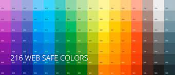

Безопасная палитра - набор цветов, которые используются для экранного дизайна. Безопасные цвета всегда неизменны при переходе от одного браузера к другому. При демонстрации на разных мониторах, или платформах, они всегда отображаются вне зависимости от разности в разрешении и возможности цветопередачи.
Безопасная палитра состоит из 216 цветов.
Безопасные градации RGB: 0, 51, 102, 153, 204, 255
Безопасные градации HEX: 00, 33, 66, 99, CC, FF
Безопасные градации в %: 0, 20, 40, 60, 80, 100
Если в одном случае любое из трех вышеуказанных значений отличается от указанных, то цвет не является безопасным.